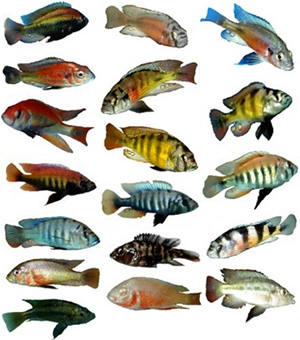

7. Биогеографические доказательства
Содержание раздела:
- Распространение животных и растений соответствует их эволюционной истории
- Островная биогеография
- Заселение изолированных территорий
- Дарвиновы вьюрки
- Параллельная эволюция
- Распространение ископаемых видов
Географическое распространение животных и растений соответствует их эволюционной истории
Биогеография — наука, изучающая закономерности географического распространения животных и растений, а также характер фауны и флоры отдельных территорий.
Если два вида сравнительно недавно произошли от одной популяции, то они как правило обитают недалеко от ареала этой исходной популяции, а значит и недалеко друг от друга. Таким образом, географическое распределение видов должно быть совместимо с филогенетическим деревом. Если не принимать во внимание теорию эволюции, то разумно предположить, что виды живут в наиболее подходящих для них условиях. Теория эволюции же предсказывает, что должно быть много благоприятных для вида мест, в которых представители вида тем не менее отсутствуют в связи с наличием географических барьеров.
Именно так дело и обстоит на практике. Сумчатые встречаются почти исключительно в Австралии (раньше они водились и на других материках, но впоследствии вымерли, скорее всего, вытесненные плацентарными конкурентами). Плацентарные млекопитающие в Австралии представлены только китообразными, ластоногими и рукокрылыми (которые легко могли перебраться в Австралию через морские проливы), а также грызунами, которые появляются в палеонтологической летописи в миоцене, когда Австралия приблизилась к Новой Гвинее. При этом природные условия Австралии благоприятны и для других видов млекопитающих. Например, завезенные на континент кролики широко размножились и продолжают вытеснять аборигенные виды; завезенные несколько тысячелетей назад собаки одичали и размножились (динго). В Австралии и на юге Южной Америки и Африки встречаются двоякодышащие, нелетающие бескилевые птицы и свистуны (зубастые жабы), в других частях света они отсутствуют.
Условия обитания в пустынях Африки, Америки и Австралии очень похожи, и растения из одной пустыни хорошо растут в другой. Тем не менее, кактусы были обнаружены только в Америке (за исключением Rhipsalis baccifera, по всей видимости занесенного в Старый Свет перелетными птицами). Многие африканские и австралийские суккуленты (то есть растения, имеющие специальные ткани для запаса воды) внешне напоминают кактусы за счет конвергентной эволюции, но относятся к другим порядкам. Морские обитатели восточных и западных берегов Южной Америки различны, за исключением некоторых моллюсков, ракообразных и иглокожих, но на противоположных берегах Панамского перешейка живет около 30 % одних и тех же рыб, что объясняется недавним возникновением перешейка (около 3 миллионов лет назад) (см.: Present biogeography из архива TalkOrigins.org.)
Островная биогеография
На большинстве океанических островов (то есть островов, которые никогда не были соединены с материком) отсутствуют наземные млекопитающие, земноводные и другие животные, не способные преодолевать значительные водные преграды. Видовой состав фауны таких островов является результатом случайного занесения (и последующей адаптивной радиации) некоторых видов, чаще всего птиц, насекомых, летучих мышей (то есть форм, способных пересекать широкие водные пространства).
Например, на Гавайских островах живет множество эндемичных (нигде больше не встречающихся) птиц, растений и насекомых, но на них полностью отсутствуют местные пресноводные рыбы, амфибии, рептилии и наземные млекопитающие (не считая завезенных людьми). На острове св. Елены тоже отсутствуют все перечисленные группы животных, но есть местные птицы, насекомые и растения. На Галапагосских островах есть потомки случайно занесенных сюда рептилий (игуаны и черепахи; о том, как рептилии могут иногда пересекать морские проливы, см. ниже), но нет местных млекопитающих, амфибий и пресноводных рыб. Та же самая картина наблюдается на множестве других океанических островов.
Однако те формы, которые все же есть на океанических островах, часто присутствуют здесь в виде множества близкородственных видов (см. ниже о галапагосских вьюрках). На многих островах (Новая Зеландия, Маврикий, Каролинские, Марианские острова и др.) есть свои эндемичные виды летучих мышей. Почему предполагаемый разумный дизайнер создал эндемичные виды летучих мышей на островах, но не создал там никаких других млекопитающих? Наука объясняет это очень просто: наземные млекопитающие практически неспособны пересекать широкие проливы, а летучие мыши умеют летать.
Еще одним свидетельством в пользу эволюции является высокое сходство островных флор и фаун с флорами и фаунами ближайших крупных массивов суши. Например, животный и растительный мир Галапагосских островов, несмотря на все своеобразие, явно связан тесными родственными связями с флорой и фауной ближайшего материка - Южной Америки (откуда и были случайно занесены немногочисленные организмы, ставшие предками галапагосских эндемиков). При этом условия жизни на архипелаге имеют мало общего с условиями, характерными для южноамериканского побережья. Факты такого рода совершенно необъяснимы в рамках идеи о "независимых актах творения" (разве что Создатель нарочно хотел создать видимость эволюции на островах - но Бог не может быть обманщиком). Эволюционное учение делает все эти факты не только осмысленными, но и прогнозируемыми.
Заселение изолированных территорий
Как сухопутные нелетающие животные в принципе могут пересекать морские проливы? Чаще всего они их не пересекают совсем, и если, например, две близкородственные группы видов обнаруживаются по разные стороны широкого пролива, то это скорее всего означает, что их предки заселили обе территории еще до того, как данный пролив образовался. Исходя из этого допущения (с учетом палеонтологической летописи и/или "молекулярных часов") часто удается сделать правильные выводы о времени расхождения тех или иных массивов суши, которые затем подтверждаются геологическими данными. Но иногда сухопутные животные все-таки могут пересекать проливы. Как сообщает Р.Докинз в книге The Greatest Show on Earth (2009), "До 4 октября 1995 года на карибском острове Ангилла не было представителей вида Iguana iguana. В указанный день популяция этих крупных ящериц внезапно появилась на восточной стороне острова. К счастью, люди непосредственно наблюдали их прибытие. Ящерицы сидели на "плоту" из вырванных с корнем деревьев, некоторые из которых достигали 30 футов в длину. Деревья, очевидно, приплыли с соседнего острова, возможно с Гваделупы, расположенной в 160 милях. За прошедший месяц два урагана прошлись по этому району - Луис 4–5 сентября и Мэрилин спустя две недели; эти ураганы вполне могли вырвать деревья вместе с игуанами, для которых проводить время на деревьях - в порядке вещей. Новая популяция на Ангилле продолжала процветать в 1998 году, и доктор Ellen Censky, проводившая оригинальное исследование, сообщила мне, что игуаны процветают и сегодня, причем, похоже, даже в большей степени, чем другие виды игуан, которые обитали на Ангилле и раньше."


Рыбы-цихлиды озера Малави (слева) и Виктория (справа). В Малави вода более прозрачная, в ней лучше распространяется коротковолновый свет, поэтому многие рыбы имеют синюю и фиолетовую окраску. В оз. Виктория вода мутная, поэтому наряды цихлид выдержаны в основном желто-красных тонах.
Попав на большой остров с бедной фауной (или, для водных животных - в большое озеро), такие виды-вселенцы с большой вероятностью испытают адаптивную радиацию - быстрое видообразование, в ходе которого они займут ряд свободных экологических ниш. Кроме галапагосских вьюрков, хорошие примеры таких быстрых адаптивных радиаций - это рачки-бокоплавы озера Байкал (зачем Создателю нужно было создавать специально для озера Байкал 250 нигде больше не встречающихся видов рачков-бокоплавов, пусть антиэволюционисты придумывают сами), рыбы-цихлиды больших Африканских озер (Малави, Виктория), дрозофилы Гавайских островов и др.
Когда полинезийцы открыли Гавайи около 1500 лет назад, они нашли здесь около 60 видов цветочниц (это определили по ископаемым остаткам), из которых до наших дней дожило лишь около 20. Все это разнообразие произошло от единственного вида птиц, случайно занесенного на Гавайи около 4 млн лет назад.
Во многих случаях обнаруживается хорошее соответствие между временем образования острова или озера (которое определяется по геологическим данным) и временем начала адаптивной радиации группы местных эндемиков, которое устанавливается путем сравнения геномов (см.: Молекулярные часы). Хорошим примером являются усачи озера Тана, о которых рассказано в другом разделе данной публикации.
Ослабленная конкуренция и незанятость многих ниш в островных экосистемах часто приводит к тому, что ниша занимается организмом, который в нормальных условиях (на континенте) никогда бы такую нишу не занял, потому что там она занята более квалифицированными "профессионалами" (напр., дятловый вьюрок и морская игуана на Галапагосах).
См. также: Дж.Симпсон. Великолепная изоляция.
Дарвиновы вьюрки
 |
| Галапагосские вьюрки, впервые описанные Дарвином. |
Все галапагосские вьюрки происходят от общего предка, случайно попавшего сюда из Южной Америки. От предковой формы, питавшейся семенами, произошли три группы птиц: семеноядные земляные вьюрки, насекомоядные древесные вьюрки и славковые вьюрки, которые тоже питаются мелкими насекомыми. В результате приспособления к разным источникам пищи вьюрки стали сильно отличаться друг от друга строением клюва. Три обычных вида земляных вьюрков — большой, средний и малый — встречаются на большинстве островов. Там, где эти три вида проживают вместе, они хорошо различаются по размерам клюва и, соответственно, по величине предпочитаемых семян. На одном из островов обитает лишь средний земляной вьюрок, и здесь у птиц клювы меньше — в отсутствие конкурента средний земляной вьюрок занимает отчасти нишу малого вьюрка (см.: Географическое видообразование. Дарвиновы вьюрки).
Параллельная эволюция на разобщенных массивах суши
Крайне трудно с креационистских позиций объяснить, почему разные группы животных на разобщенных массивах суши дают сходные наборы жизненных форм. При этом аналогичные формы на разных материках сходны между собой по "поверхностным" признакам, которые связаны с приспособлением к конкретному образу жизни, тогда как сходство по "глубинным" признакам, отражающим генетическое родство, у них наблюдается не с заморскими аналогами, а с соседями по материку, пусть и непохожими внешне. Параллельная (конвергентная) эволюция на разных материках, приводящая к появлению сходных приспособлений, объясняется тем, что животные, ведущие сходный образ жизни, подвергаются сходному давлению отбора, и поэтому у них могут развиваться похожие адаптации.

Параллельная эволюция на разобщенных массивах суши. Справа - американские плацентарные млекопитающие, слева - их австралийские сумчатые аналоги (Coyne, 2009). Внешне (т.е. по "поверхностным" адаптивным признакам) сумчатая летяга больше похожа на обычную летягу, чем на сумчатого крота или сумчатого муравьеда. Однако по более "глубоким" (т.е. эволюционно древним) анатомическим и эмбриологическим признакам, а также по нуклеотидным последовательностям ДНК, она гораздо ближе к другим австралийским сумчатым. Поэтому ее и относят к отряду сумчатых, а белку-летягу - к отряду грызунов.
Еще один хорошо изученный пример параллельной эволюции на изолированных островах описан в заметке "Видообразование на разных островах идет параллельными путями." Подробнее о параллельной эволюции см. в наших обзорах: "Направленность эволюции" и "Параллелизмы и гомологическая изменчивость".
Распространение ископаемых видов согласуется с эволюционным деревом и палеогеографическими реконструкциями
Географическое распределение видов в прошлом, которое можно частично восстановить по ископаемым останкам, также должно соответствовать филогенетическому дереву. Теория тектоники плит и теория эволюции позволяют предсказать, где следует искать те или иные ископаемые остатки. Древнейшие окаменелости сумчатых найдены в Северной Америке, их возраст составляет около 80 миллионов лет. 40 миллионов лет назад сумчатые уже были распространены в Южной Америке, но в Австралии, где они сейчас доминируют, сумчатые появились только около 30 миллионов лет назад. Теория эволюции предсказывает, что австралийские сумчатые произошли от американских. Согласно теории тектоники плит, 30—40 миллионов лет назад Южная Америка и Австралия еще оставались частью Гондваны, крупного континента в южном полушарии, а между ними находилась будущая Антарктида. На основании двух теорий исследователи предсказали, что сумчатые мигрировали из Южной Америки в Австралию через Антарктиду 30—40 миллионов лет назад. Это предсказание подтвердилось: начиная с 1982 года на острове Сеймур, расположенном недалеко от Антарктиды, были найдены более десяти видов ископаемых сумчатых возрастом 35—40 миллионов лет.
Распространение многих ископаемых организмов крайне трудно объяснить, если не учитывать тектонику плит (дрейф континентов). Распространение этих организмов на современной карте мира кажется бессистемным и хаотическим, однако оно сразу делается осмысленным и понятным, если мы наложим его на разработанные геологами палеогеографические реконструкции.

Положение континетов сегодня (верхний рисунок) и в пермском периоде (299-251 млн лет назад). Серым цветом выделены области распространения ископаемого семенного папоротника Glossopteris. В пермском периоде это растение было распространено в зоне с прохладным климатом вокруг южного полюса. На эту область периодически наползали с юга ледники, оставившие характерные следы в геологической летописи, по которым можно определить направление их движения (стрелки). И распространение Glossopteris, и направление движения ледников выглядят совершенно естественно и осмысленно на палеогеографической реконструкции, но не на современной карте мира Из Coyne, 2009.
Для самого Дарвина важным аргументом в пользу изменяемости видов стал тот факт (отмеченный им самим в ходе кругосветного путешествия на корабле "Бигль"), что вымершие животные, чьи ископаемые остатки встречаются в данном регионе, часто похожи на современных жителей этого региона больше, чем на обитателей других регионов. Например, в Южной Америке, где живут современные ленивцы и броненосцы, встречаются ископаемые остатки их вымерших родственников - гигантских ленивцев мегатериев и гигантских броненосцев глиптодонтов. Ни современные ленивцы, ни броненосцы, ни их ископаемые родичи ни разу не были найдены в Старом Свете. Именно такую картину и следует ожидать, если виды не создавались Творцом в готовом виде, а происходили друг от друга в ходе эволюции.
Ближайшие родственники современных людей — гориллы и шимпанзе — обитают в Африке. Исходя из этого, в 1872 году Чарлз Дарвин предположил, что и древних предков человека следует искать в Африке. Многие исследователи, такие как Луис, Мэри и Ричард Лики, Рэймонд Дарт и Роберт Брум, последовали совету Дарвина, и начиная с 1920-х годов в Африке было найдено множество промежуточных форм между человеком и человекообразными обезьянами (см.: Происхождение и эволюция человека). Если бы ископаемых австралопитеков обнаружили, например, в Австралии, а не в Африке, то теорию эволюции пришлось бы пересматривать (см.: Дарвин 1859. Глава 12. Географическое распространение.; Глава 13. Географическое распространение (продолжение))